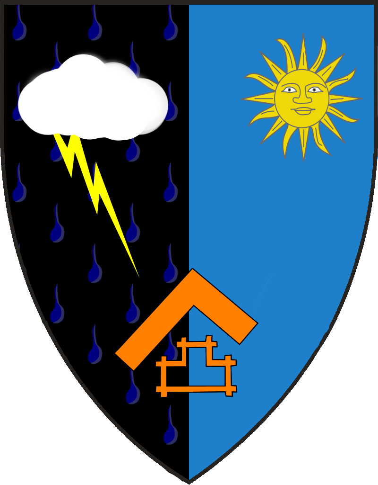

Posted to: The Google+ Heraldry Community
Posted by: Matthew Robinson
Created on: July 3 2013 at 15:54
Hopefully my text explains it correctly:
per pale gutty Sable and Navy and Azure
a sun in his splendour in sinister chief Or
a cloud Argent issuing lightening flash party per bend Or in dexter chief
a masonic symbol orange in middle base
